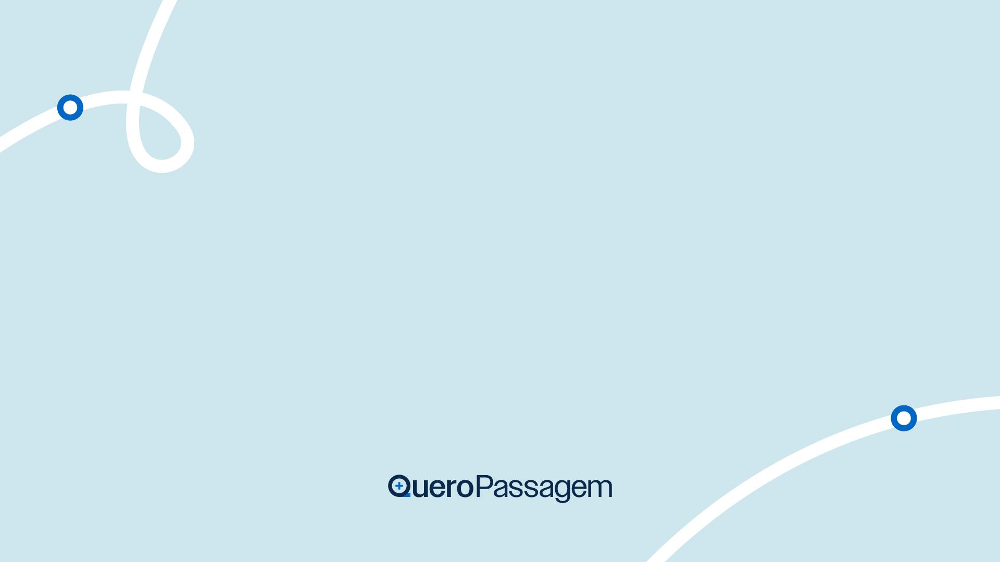

<!doctype html><html lang="pt-BR"><meta charset="utf-8"><title>Comunicado QP · exemplo local</title><link rel="stylesheet" href="../../skills/qp-brandbook/assets/fonts.css"><style>*{box-sizing:border-box}body{margin:0;background:#e7edf3;font-family:Inter,sans-serif;color:#0d2240}header{width:960px;padding:22px 0;margin:auto;font-size:14px;line-height:1.6}.slide{position:relative;width:960px;margin:0 auto 26px;overflow:hidden;background:white}.editable:focus{outline:2px solid #0066c6}img{display:block}@media print{body{background:white}header{display:none}.slide{margin:0;break-after:page}@page{size:10in 5.625in;margin:0}}</style><header><strong>Comunicado QP · exemplo local</strong><br>Modelo oficial preservado como referência. Não é anúncio de uma mudança real e não contém datas ou políticas inventadas.</header><section class="slide" aria-label="Comunicado" style="height:540.0px;background:#FFFFFF"><div style="position:absolute;left:-31.595800524934383px;top:610.9750656167979px;width:853.0px;height:324.0px;overflow:hidden"></div><div style="position:absolute;left:-874.0721784776903px;top:514.720472440945px;width:792.0px;height:372.0px;overflow:hidden"></div><div class="editable" contenteditable="true" spellcheck="false" style="position:absolute;left:176.0236220472441px;top:168.18897637795277px;width:607.9527559055118px;height:203.6220472440945px;font-family:'Sora';font-weight:300;font-size:26.666666666666668px;color:#0D2240;font-style:normal;text-align:center;padding:4.799212598425197px 4.799212598425197px 0 4.799212598425197px;line-height:1.25;white-space:pre-wrap;overflow:visible">Exemplo de comunicado interno.

Explique a mudança e o próximo passo. Complete os detalhes com a área responsável antes de compartilhar.</div><div class="editable" contenteditable="true" spellcheck="false" style="position:absolute;left:123.26771653543308px;top:69.63989501312336px;width:713.4645669291339px;height:74.33070866141732px;font-family:'Sora';font-weight:600;font-size:53.333333333333336px;color:#0D2240;font-style:normal;text-align:center;padding:4.799212598425197px 4.799212598425197px 0 4.799212598425197px;line-height:1.25;white-space:pre-wrap;overflow:visible">Um novo processo</div></section></html>
